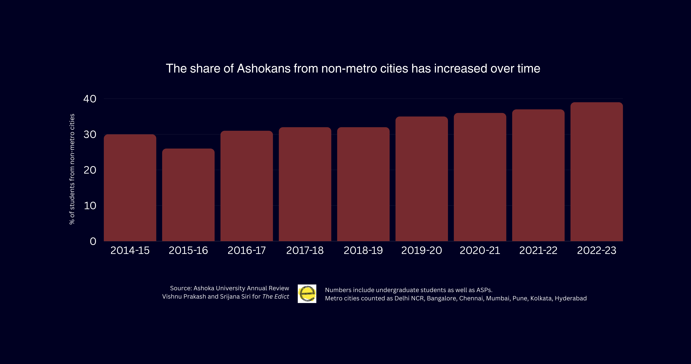
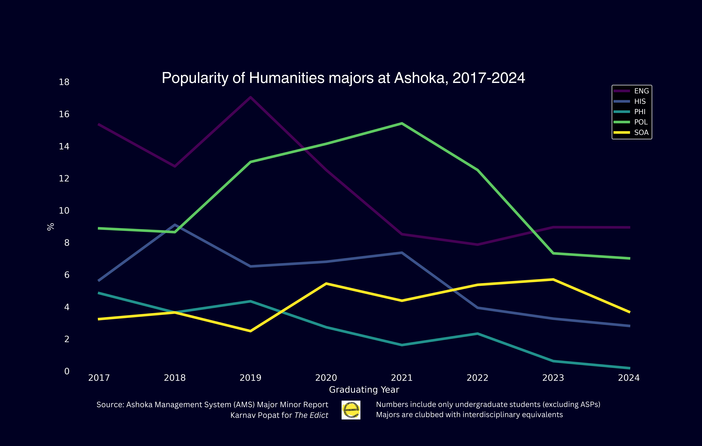
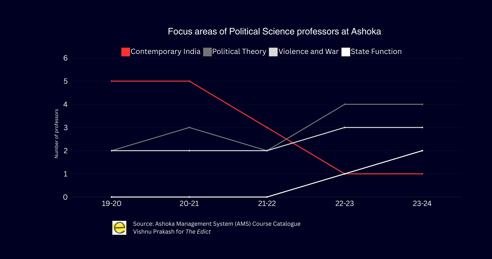
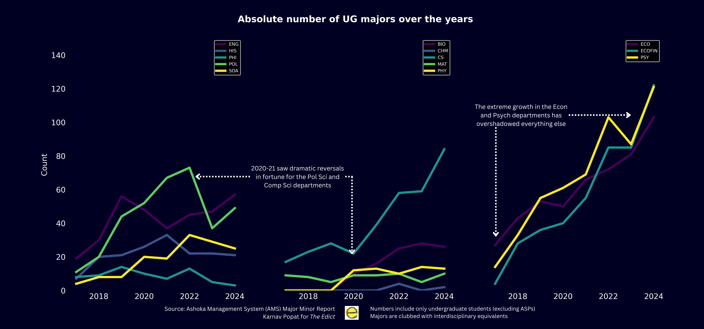
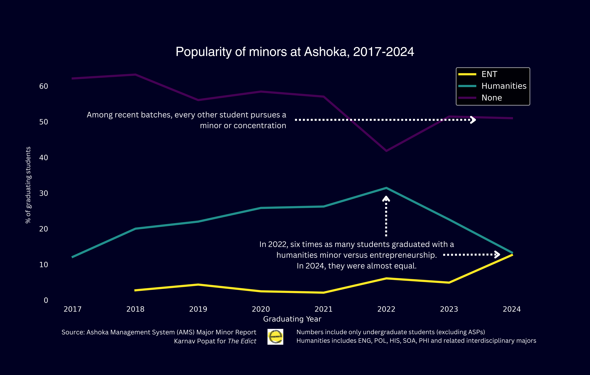
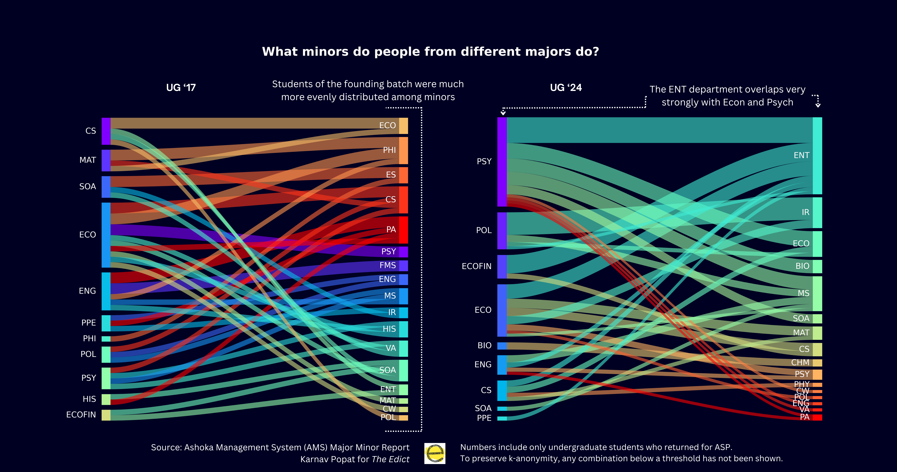

Comparing the changes between the founding batch and newer batches, Anisha Sharma,
Assistant Professor of Economics observes that there has been a shift in the nature of the incoming students.
“The students who joined that first year were really taking a big bet on an unknown place that was really just
selling itself as a liberal arts unique experience, never seen in India before”, she says.
Since then, Sharma believes that Ashoka has become a much more mainstream option and it is not surprising that
“mainstream choices are now being reflected” in the data now because
“the labour market incentives for doing Economics-Finance and Psychology are high.”
Chancellor Rudrangshu Mukherjee, in an interview withThe Edict remarked,
“This is where societal compulsions and societal expectations come in…
so I am going to study at Ashoka because Ashoka is going to provide me with a vista to a better placement or a better job.”
According to Chancellor Mukherjee this trend is a function of an increasingly transactional
relationship Indian society has with higher education. Employment as a goal from higher education is a
reality far-removed from what drove the initial demand for Ashoka.
The initial batches, as Harris says, were “a self-selecting bunch… who came to Ashoka because they had a
critique of the Indian Higher Education system.”
Ayush Pant, Assistant Professor of Economics, who joined the department in 2020, further hypothesises
that students might be coming into Ashoka with a set idea of pursuing the Economics/Economics-Finance
majors for better job prospects.
To Economics faculty, it almost seems as though students feel themselves compelled to major in Economics.
As batch sizes grow and the number of students in gateway courses increase, Pant, who has been teaching
Introduction to Economics [ECO-1001] for the past four years confesses that he is trying to remind students
that “[they] have an option here.” The advantage of a liberal arts methodology, he thinks, is being able
to guide students to understand what works and does not work for them. There is always scope to explore
before “zeroing in” on a major.
Hasan, in her experience as the Economics Representative, finds that students approach Economics
as a “safety net”; “If you do Economics and take something else alongside it, you'll still be protected in
the future,” is a popular perception amongst students, she says. Economics students “disproportionately stand out”
in the placement cycle, which according to Hasan increases the incentive for students to pursue the discipline.
A fourth-year student who participated in the 2024 placement cycle, on the condition of anonymity,
told The Edict: "I had initially decided to pursue a Computer Science major. In my second year,
I consulted a senior who told me that Economics students have a much easier time on the market — both
getting offers during the placement cycle and having options after Ashoka. After weighing my options,
I ended up majoring in Economics.” The student received a marquee Day Zero offer and intends to complete a
minor in Computer Science in their fourth year.
Fahad Hasin, an alum from the undergraduate batch of 2020, suspects that increasing socio-economic diversity
in each batch can also contribute to the change in the students' major choices. “In the first four-five years
they were mostly people from Delhi, Gurgaon, Bangalore. Generally from a more socio-economically privileged background.
So, naturally there is a higher risk appetite because of that”, reflects Hasin.
Data from the university's Annual Reviews shows that since 2014 there has been an increase of 9% in the number of students
from non-metro cities. However, this increase in percentage is alongside the increase in batch sizes,
which would mean in 2023, across four (undergraduate plus ASP) batches of 2,203 students approximately,
862 came from non-metro cities.

As Ashoka goes from experiment to brand, Hasin and Pant also seem to agree that the university is
increasingly marketing itself through its placement data. Hasin recounts that Ashoka
“never talked about placements or these typical things that an Indian college talks about,
and they only talked about this as an interdisciplinary education, and you come here, you explore.”
Hasin, however, also thinks that the focus on placement is not necessarily a bad thing. “It is an important
consideration for less privilege people who would otherwise choose safer options. But this had to be
complemented with other ideals that Ashoka started with.”
But now, the university's Instagram is populated with placement figures. Pant argues that
while using placement records to attract more students “is a rational thing to do,” it
can potentially turn admissions into a placement game. Such an admissions strategy can
attract students who are more motivated by prospective employment opportunities than interest in the discipline.
Not Just a 'Right Now' Phenomenon
An alum from the undergraduate batch of 2021, who spoke to The Edict on the condition of anonymity,
however, feels that Ashokans were interested in employment even before the popularity of Economics
and Economics-Finance as majors grew. “Employability was still a concern …back then,” he says.
Having studied Political Science at Ashoka, he feels that the (often public) departures of
huge names in the discipline, such as Professor Pratap Bhanu Mehta, and the hollowing out of
key centres such as Trivedi Centre for Political Data (TCPD),
a one of its kind open-access political data resource, employability for Political Science
majors has “fallen through the floor.”

Since Mehta's resignation in April 2021, a number of professors,
including Neelanjan Sircar and Madhav Khosla also did not continue at Ashoka.
The Edict reported that by Monsoon 2021, many students could not enrol in introductory courses..
Only 7% of the undergraduate batch of 2024 graduated with a political science major.
“The Political Science Department at Ashoka was deliberately gutted to address what some founders and
administration members perceived to be a liability to the university”, said Gilles Verniers,
who left the Political Science Department and the TCPD in 2023.
It is “no coincidence that most of the faculty who left the department had public visibility,” Vernier believes.
Like Hasin, Verniers too believes that the presence of public intellectuals like Professor Mehta was
a major factor of attractiveness, although not the only one. “He is an institution builder in a lot of ways,”
recalls Hasin (UG’20), who studied Political Science at Ashoka. Professor Mehta, “nurtured deep intellectualism and
people who can speak truth to power, but such personalities and activities are in some ways at odds with the current
political economy”, he continues.
Verniers says that the foundational appeal of the Political Science major can be attributed to the
fact that they “collectively succeeded in building one of the country's most exciting political science
departments, and frankly, as far as Indian political science is concerned, in the world.” While both
Verniers and Hasin believe the current Political Science department at Ashoka remains a group of “fantastic scholars
and teachers,” there has been a shift in the profile of the department.

Professors in the department are gradually becoming less publicly prominent scholars and the
study of controversial contemporary topics is becoming limited. The department's engagement with contemporary
India has decreased since 2020 and more niche-research specialisations have taken over.
“Having faculty committed to public engagement was part of the department's identity.
You could not eliminate this aspect while preserving the rest, including the department's attractiveness to students,” Vernier says.
Professor Verniers was the founding director of TCPD, which the university shut down in 2023.
Even though it was not formally associated with the Political Science department, Professor
Verniers feels that the closure of TCPD has “probably contributed to the declining interest in the department.”
Hasin, who interned at TCPD for two months recalls learning a lot over the summer and believes that
it added value to his general profile. “I think there was this instant association that this
person can work with data because this person has done this internship,” Hasin said. He is
confident that working with the TCPD helped him clear a few rounds of the jobs he applied to
during his fourth year. Hasin's experience speaks to Professor Verniers's foresight that “TCPD helped
dispel the (misplaced) notion that Political Science does not get you a job like other departments do.”
While not affecting the number of faculty members in the same way that it has for the Political Science
Department, the contemporary political climate has, according to Professor Harris, affected the
demand for the English major.
"The 18 year olds coming in were 8 when this government came into power - they've spent all their
lives being encouraged to put their heads down and comply with authority,” Harris says. He believes
that this does not bode well for disciplines that require radical risk taking both to enter, and to
succeed in. “In the classroom, even amongst English majors, there is a diminishing willingness to take
risks, to open oneself up to their classmates,” he observes.
Pandemic Strikes

After the pandemic, the demand for majors such as Psychology has risen.
In 2017, 14 students graduated with a psychology degree but 2024 that number rose to 111.
Sramana Majumdar, Assistant Professor of Psychology, thinks that “conversations around mental health
become accessible and salient during the pandemic.” might have motivated young people to develop an
interest in psychology. She also notes that students switching from majors such as Economics and
Computer Science to Psychology in recent years have massively contributed to “increasing student numbers” within the department.
Mansi Pund (UG’24) who completed a major in Psychology with a Creative Writing minor,
became interested in Psychology during the pandemic. “I started reading up on the subject and
so I really liked it…I really liked how psychotherapy works, so I was like, might as well just
do psychology then,” she says. Psychology, as a discipline, is related to science and Ashoka
offers a Bachelors in Science degree. These factors make it “easier to convince parents,” Pund chuckles.
Since the pandemic, students are pivoting towards major-minor combinations that offer a
better return on investment. “Post-pandemic, it is true that opportunities are limited.
The good opportunities are very limited,” says Hasan. Having interacted with many junior students,
Hasan thinks that students are shaping their academic trajectories keeping these job prospects in mind.
And if grades are any indicator of future success in the job market, then Psychology majors are making efficient bets.
A combined analysis of the major-minor report and the 2024 Undergraduate Convocation handbook The Edict accessed
suggests that more than half (52%) of the graduating Psychology majors this year received Latin Honours, as compared to a
University average of 34%.
Data from the major-minor report shows that the number of students pursuing Entrepreneurship,
a minor that provides hands-on experience with business and marketing, is increasing exponentially.
Entrepreneurship is “more like I'm getting skills because there is nothing like a psychology-major job.”
By doing Psychology, Entrepreneurship and Creative Writing, Pund is gearing up for a job in marketing.
The growing numbers of entrepreneurship minors at Ashoka illustrate the shift in preferences where
diverse academic experiences are sacrificed for “the added benefit of employability.”

The rise in the number of students pursuing minors and concentrations does not spill over to the humanities.
Among the post-COVID batches (intakes after UG’22), the share of humanities minors has declined from 30% to 10%.
The data collected by The Edict suggests that the STEM departments have not benefited from the rise in minors either.
Most of the uptick in minors can be explained by the rise of the Entrepreneurship department. This trend is reflected in the behaviour of the post-pandemic ASP batches as well.

Among the last three enrolled batches of ASPs, few students chose to explore.
More than half of them opted to study Entrepreneurship or nothing besides their Advanced Majors.
This trend, too, appears to be driven by the Economics department.
The majority of Economics-Finance majors choose to study Entrepreneurship in their fourth year,
while pure Economics students are divided between that or nothing. Although the Economics department
is the biggest at Ashoka, it is one of the least popular subjects to study in fourth year.

While students from the UG’24 batch branch out from their departments,
they pursue minors in disciplines closely related to their majors. Professor Sharma hypothesises
this to be the case for Economics-Finance majors, for whom the 4 extra finance courses are an add-on
to their Economics degree along with a Entrepreneurship minor.
“People are much more in tracks these days”, confirms Harris.
Faculty, too, have felt this shift. Harris remembers that “there was a way in which ideas would
circulate across disciplinary boundaries in the early batches, because people had been talking together.”
Now, he observes lesser students speaking with each other. Many friend groups are discipline-based and
socio-economically homogeneous.
“I think the pandemic has made a huge difference,” Harris further postulates. Broadly,
Harris finds the post-pandemic student less capable of handling reading material. Fewer
and fewer students talk about books they have read; a student’s attention span “has been
addled by a mixture of anxiety and internet addiction.”
In Forms of Literature [ENG-1001], which he has now been teaching for ten years,
“some students put together a petition saying, can you remove [Conrad’s Heart of Darkness] from
the syllabus?” Confused, he asked his students “on what ground?” “It’s dark, so we don’t want to
be reminded of darkness, and it’s too long.”
While the atmosphere of teaching and learning is not always as bad as removing a 110 page novel
from the syllabus, Harris feels “[Faculty] are dealing now with very different types of both
literal literacy and social literacy, and these aren't environments that are particularly
conducive to humanities work as we've conventionally conceived it.”
As the number of students pursuing disciplines that enhance employability increase,
the nature of liberal arts education at Ashoka also seems to be changing. Conservative
course selections, grade-focused learning and impersonal student-faculty relationships have
created a growingly uninspiring atmosphere. “The result is only that we are stuck in a bad
equilibrium,” says Pant, “and I don’t know how it can be broken.”